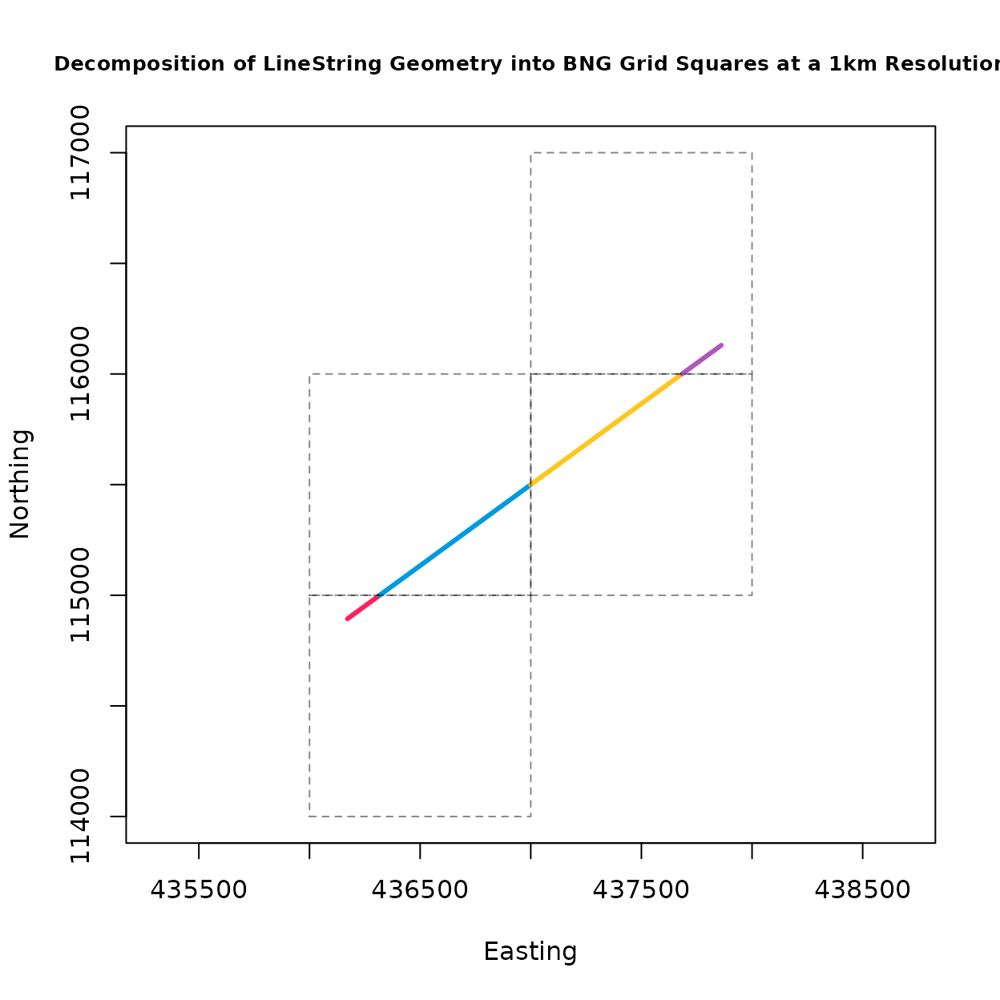
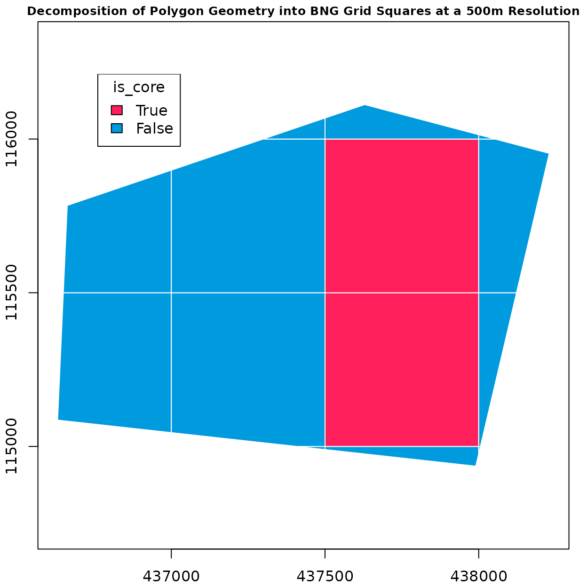
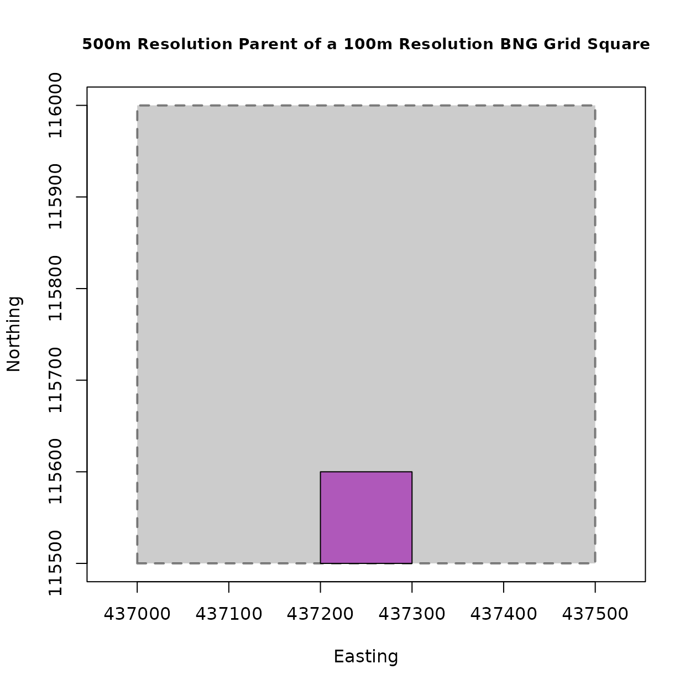
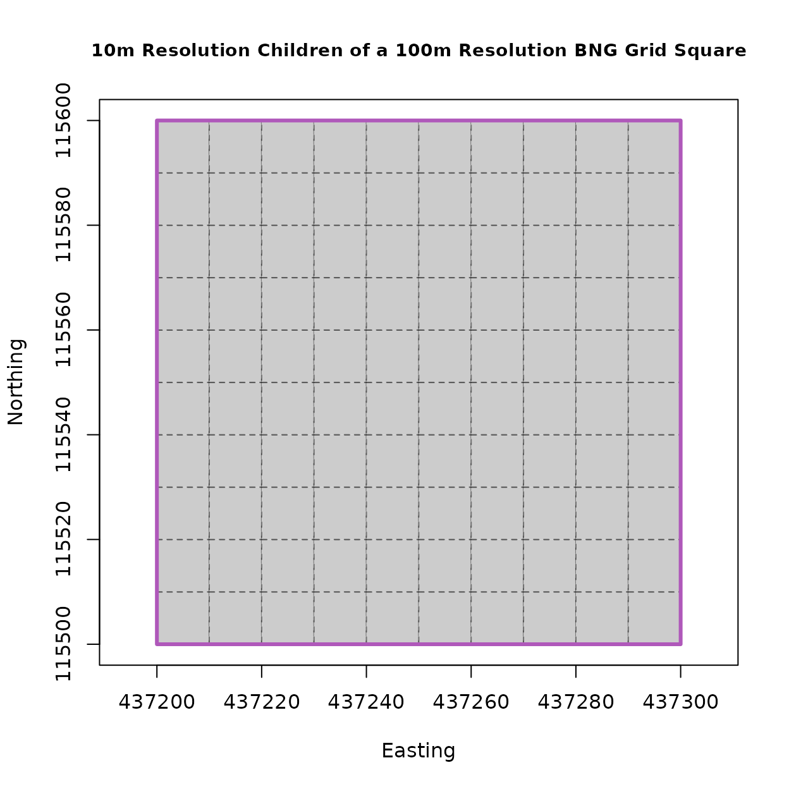
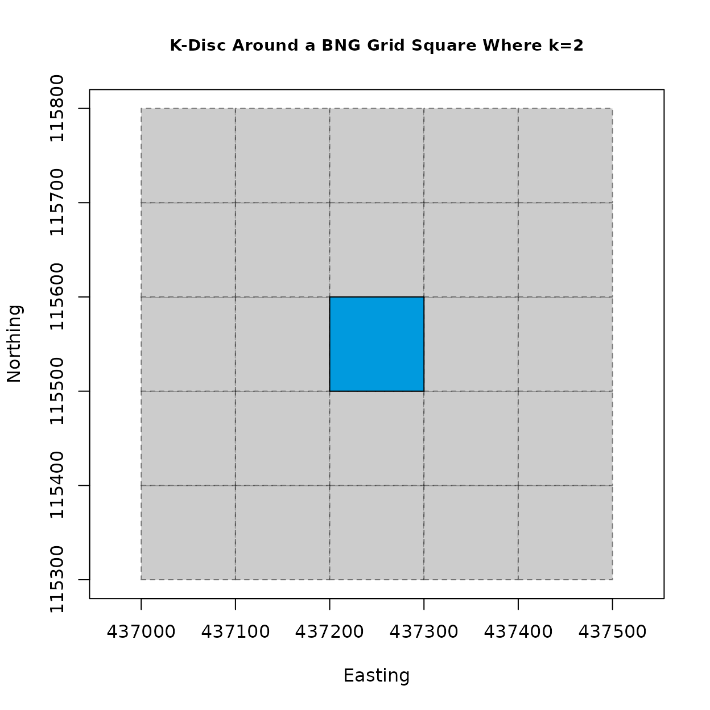
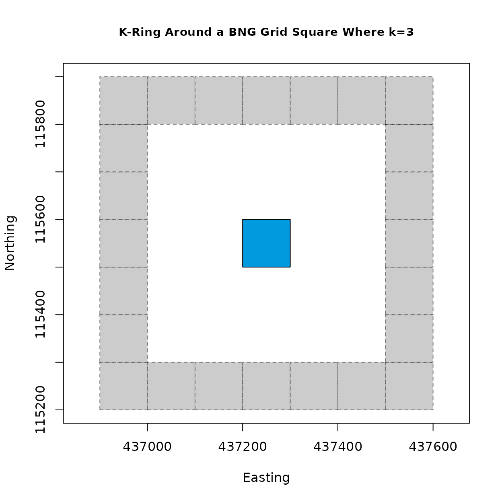

The osbng R package support geospatial grid indexing and
interaction with Ordnance Survey’s British National Grid (BNG) index
system. osbng uses geos for
geospatial operations, with sf an optional
dependency. The osbng package provides functionality
supporting different interactions with the BNG index system
(e.g. indexing, hierarchy, traversal). This notebook provides an
overview of the package functionality, including example usage.
BNG Index System
The OS BNG index system, also known as the OS National Grid, is a rectangular Cartesian 700 x 1300km grid system based upon the transverse Mercator projection. In the BNG, locations are specified using coordinates, eastings (x) and northings (y), measured in meters from a defined origin point (0, 0) southwest of the Isles of Scilly off the coast of Cornwall, England. Values increase to the northeast, covering all of mainland GB and surrounding islands.
The BNG is structured using a hierarchical system of grid squares at various resolutions. At its highest level, the grid divides GB into 100 km by 100 km squares, each identified bya two-letter code. Successive levels of resolution further subdivide the grid squares into finder detail, down to individual 1-meter squares.
list_bng_bounds()
#> xmin ymin xmax ymax
#> 0 0 700000 1300000
list_bng_prefixes()
#> [1] "SV" "SW" "SX" "SY" "SZ" "TV" "TW" "SQ" "SR" "SS" "ST" "SU" "TQ" "TR" "SL"
#> [16] "SM" "SN" "SO" "SP" "TL" "TM" "SF" "SG" "SH" "SJ" "SK" "TF" "TG" "SA" "SB"
#> [31] "SC" "SD" "SE" "TA" "TB" "NV" "NW" "NX" "NY" "NZ" "OV" "OW" "NQ" "NR" "NS"
#> [46] "NT" "NU" "OQ" "OR" "NL" "NM" "NN" "NO" "NP" "OL" "OM" "NF" "NG" "NH" "NJ"
#> [61] "NK" "OF" "OG" "NA" "NB" "NC" "ND" "NE" "OA" "OB" "HV" "HW" "HX" "HY" "HZ"
#> [76] "JV" "JW" "HQ" "HR" "HS" "HT" "HU" "JQ" "JR" "HL" "HM" "HN" "HO" "HP" "JL"
#> [91] "JM"Resolutions
osbng supports the “standard” BNG meter-based
resolutions, which represent powers of ten from 1m to 100km
(1m, 10m, 100m, 1km, 10km, 100km). It also supports the
“intermediate” quadtree resolutions
(5m, 50m, 500m, 5km, 50km), identified by an ordinal
(NE, SE, WS, NW) BNG reference direction suffix. The
resolution argument for functions can be expressed as a
meter-based integer or as a label.
list_bng_resolution(lbl = TRUE)
#> [1] "100km" "50km" "10km" "5km" "1km" "500m" "100m" "50m" "10m"
#> [10] "5m" "1m"
list_bng_resolution(lbl = FALSE)
#> [1] 1e+05 5e+04 1e+04 5e+03 1e+03 5e+02 1e+02 5e+01 1e+01 5e+00 1e+00
BNGReference
The BNG index system uses BNG references, also known more simply as
grid or tile references, to identify and index locations across Great
Britain (GB) into grid squares at various resolutions. The
osbng package implements a custom BNGReference
object. This object validates and encapsulates a BNG reference,
providing functions to access and manipulate the reference. All
functions accepting or returning BNG references enforce the use of this
class. Functions within osbng are vectorised and compatible
with pipes (%>%, |>) for efficient
processing of multiple BNG references.
# Convert a BNG reference string into a `BNGReference` object
bng_ref <- as_bng_reference("SU 372 155")
bng_ref
#> <BNGReference[1] with Resolution=100m>
#> [1] <SU 372 155>
# The BNG reference string as a compact string
print(bng_ref, compact = TRUE)
#> <BNGReference[1] with Resolution=100m>
#> [1] <SU372155>
# The BNG reference string as a formatted string (default behaviour)
print(bng_ref, compact = FALSE)
#> <BNGReference[1] with Resolution=100m>
#> [1] <SU 372 155>
# The BNG resolution expressed in metres
get_bng_resolution(bng_ref)
#> [1] 100
# The BNG resolution expressed as a descriptive label
get_bng_resolution_string(bng_ref)
#> [1] "100m"Indexing
A core component of osbng is the ability to index and
work with coordinates and geometries against the BNG index system. This
includes:
- Encoding easting and northing coordinates into
BNGReferenceobjects at a specified resolution. - Decoding
BNGReferenceobjects back into coordiantes, bounding boxes, and grid squares asgeosgeometries. - Indexing boudning boxes and
geosgeometries into grid squares at a specified resolution for spatial analysis.
# Easting and northing coordinates
x <- 437293
y <- 115543
# Convert easting and northing to BNGReference at 1km resolution
bng_ref <- xy_to_bng(x, y, resolution = "1km")
bng_ref
#> <BNGReference[1] with Resolution=1km>
#> [1] <SU 37 15>
# Decode BNGReference back into coordinates
# Default "position" is "lower-left"
bng_to_xy(bng_ref)
#> [,1] [,2]
#> [1,] 437000 115000
# Decode BNGRefernece back into coordinates
# Centroid of the grid square
# "position" can be one of "lower-left", "upper-left", "lower-right", "upper-right", "centre"
bng_to_xy(bng_ref, position = "centre")
#> [,1] [,2]
#> [1,] 437500 115500
# Return the grid square bounding box coordinates for the BNGRference object
bng_to_bbox(bng_ref)
#> [,1] [,2] [,3] [,4]
#> [1,] 437000 115000 438000 116000
# Return the grid square as a geos geometry object for the BNGReference object
# Alternatively return the geometry as WKT or `sf` object
bng_to_grid_geom(bng_ref)
#> <geos_geometry[1]>
#> [1] <POLYGON ((437000 115000, 438000 115000, 438000 116000, 437000 116000, 437000 115000))>Indexing geos Geometries
The geom_to_bng and
geom_to_bng_intersection functions enable the indexing of
geometries, represented using geos Geometry objects, into
grid squares at a specified resolution. Both functions accept
geos Geometry objects of the following types:
Point, LineString, Polygon,
MultiPoint, MultiLineString,
MultiPolygon, and GeometryCollection. The
coordinates must be encoded in the British National Grid (OSGB36)
EPSG:27700 coordinate reference system.
These functions facilitate grid-based spatial analysis, enabling applications such as statistical aggregation, data visualisation, and data interoperability. The two functions differ in their operation:
-
geom_to_bngreturns the BNG grid squares intersected by the input geometry. -
geom_to_bng_intersectionreturns the intersections (shared geometries) between the input geometry and the grid square geometries.
See the vignette indexing for more examples and etail on the operation of the two functions.
Point
# Easting and northing coordinates
x <- 437293
y <- 115543
# Construct a geos Point geometry from easting and northing coordinates
geom <- geos::geos_make_point(x, y)
# Return the BNGReference object for the geometry at a 5km resolution
geom_to_bng(geom = geom, resolution = "5km")
#> <BNGReference[1] with Resolution=5km>
#> [1] <SU 3 1 NE>
# Return the indexed results for the geometry at a 5km resolution
# For a Point geometry, the intersection geometry is the same as the original geometry
# The is_core property will always be False for a Point geometry
geom_to_bng_intersection(geom = geom, resolution = "5km")
#> [[1]]
#> [[1]]$BNGReference
#> <BNGReference[1] with Resolution=5km>
#> [1] <SU 3 1 NE>
#>
#> [[1]]$is_core
#> [1] FALSE
#>
#> [[1]]$geom
#> <geos_geometry[1]>
#> [1] <POINT (437293 115543)>LineString
# Create a geos LineString geometry from Well Known Text (WKT)
geom <- geos::geos_read_wkt("LINESTRING (436171.8 114893.7, 437861.3 116130.0)")
# Return a list of the BNGReference object(s) intersected by the geometry at a 1km resolution
geom_to_bng(geom = geom, resolution = "1km")
#> [[1]]
#> <BNGReference[4] with Resolution=1km>
#> [1] <SU 36 14> <SU 36 15> <SU 37 15> <SU 37 16>
# Return a nested list of the indexing results for the geometry at a 1km resolution
# The is_core property will always be False for a LineString geometry
geom_to_bng_intersection(geom = geom, resolution = "1km")
#> [[1]]
#> [[1]]$BNGReference
#> <BNGReference[4] with Resolution=1km>
#> [1] <SU 36 14> <SU 36 15> <SU 37 15> <SU 37 16>
#>
#> [[1]]$is_core
#> [1] FALSE FALSE FALSE FALSE
#>
#> [[1]]$geom
#> <geos_geometry[4]>
#> [1] <LINESTRING (436171.8 114893.7, 436317.06721 115000)>
#> [2] <LINESTRING (436317.06721 115000, 437000 115499.73946)>
#> [3] <LINESTRING (437000 115499.73946, 437683.6449 116000)>
#> [4] <LINESTRING (437683.6449 116000, 437861.3 116130)>Visualise the results
For this example of visualising the results, we will use the
sf library for spatial data handling, which is a suggested
package that works well with osbng.
# Return the indexed results
bng_idx_geoms <- geom_to_bng_intersection(geom = geom,
resolution = "1km",
format = "sf")
# Store the indexed results as a spatial data frame
bng_idx_geoms <- st_sf(data.frame(bng_idx_geoms))
# Store the intersected BNGReference grid squares for context
bng_grid_geoms <- bng_to_grid_geom(bng_idx_geoms$bng_reference,
format = "sf")
# Categorical colours
# https://github.com/OrdnanceSurvey/GeoDataViz-Toolkit/blob/master/Colours/GDV%20colour%20palettes_v0.9.1.pdf
catcols <- c("#FF1F5B", "#009ADE", "#FFC61E", "#AF58BA")
# Plot geometries representing the intersection between the geometry and the BNG grid squares
plot(st_geometry(bng_idx_geoms),
col = catcols,
lwd = 3,
extent = st_bbox(bng_grid_geoms),
main = "Decomposition of LineString Geometry into BNG Grid Squares at a 1km Resolution",
cex.main = .8,
axes = TRUE,
xlab = "Easting",
ylab = "Northing")
# Plot intersected BNGReference grid squares for context
plot(st_geometry(bng_grid_geoms),
col = NA,
border = "#00000075",
lty = "dashed",
add = TRUE)
Polygon
# Create a geos Polygon geometry from Well Known Text (WKT)
geom <- geos::geos_read_wkt("POLYGON ((436661.45305455 115784.01571607, 437629.10896848 116112.11767069, 438229.486575 115953.45344189, 437990.51082297 114935.84767816, 436630.11197232 115085.69722758, 436661.45305455 115784.01571607))")
# Return a list of the BNGRefernce objects intersected by the geometry at a 500m resolution
geom_to_bng(geom, resolution = 500)
#> [[1]]
#> <BNGReference[14] with Resolution=500m>
#> [1] <SU 37 14 NW> <SU 37 14 NE> <SU 38 14 NW> <SU 36 15 SE> <SU 37 15 SW>
#> [6] <SU 37 15 SE> <SU 38 15 SW> <SU 36 15 NE> <SU 37 15 NW> <SU 37 15 NE>
#> [11] <SU 38 15 NW> <SU 37 16 SW> <SU 37 16 SE> <SU 38 16 SW>
# Return a nested list of the indexed geometry and BNGReference objects for the geometry at 500m resolution
geom_to_bng_intersection(geom, resolution = 500)
#> [[1]]
#> [[1]]$BNGReference
#> <BNGReference[14] with Resolution=500m>
#> [1] <SU 37 14 NW> <SU 37 14 NE> <SU 38 14 NW> <SU 36 15 SE> <SU 37 15 SW>
#> [6] <SU 37 15 SE> <SU 38 15 SW> <SU 36 15 NE> <SU 37 15 NW> <SU 37 15 NE>
#> [11] <SU 38 15 NW> <SU 37 16 SW> <SU 37 16 SE> <SU 38 16 SW>
#>
#> [[1]]$is_core
#> [1] FALSE FALSE FALSE FALSE FALSE TRUE FALSE FALSE FALSE TRUE FALSE FALSE
#> [13] FALSE FALSE
#>
#> [[1]]$geom
#> <geos_geometry[14]>
#> [1] <POLYGON ((437408.10837 115000, 437500 115000, 437500 114989.87803, 437408.10837 115000))>
#> [2] <POLYGON [437500 114936...438000 115000]>
#> [3] <POLYGON ((438000 114976.25446, 438000 115000, 438005.57643 115000, 438000 114976.25446))>
#> [4] <POLYGON ((436630.11197 115085.69723, 436648.70621 115500, 437000 115500, 437000 115044.95362, 436630.11197 115085.69723))>
#> [5] <POLYGON [437000 115000...437500 115500]>
#> [6] <POLYGON ((437500 115000, 438000 115000, 438000 115500, 437500 115500, 437500 115000))>
#> [7] <POLYGON ((438005.57643 115000, 438000 115000, 438000 115500, 438122.99703 115500, 438005.57643 115000))>
#> [8] <POLYGON ((437000 115898.80643, 437000 115500, 436648.70621 115500, 436661.45305 115784.01572, 437000 115898.80643))>
#> [9] <POLYGON [437000 115500...437500 116000]>
#> [10] <POLYGON ((437500 115500, 438000 115500, 438000 116000, 437500 116000, 437500 115500))>
#> [11] <POLYGON [438000 115500...438229 116000]>
#> [12] <POLYGON ((437500 116068.34084, 437500 116000, 437298.44551 116000, 437500 116068.34084))>
#> [13] <POLYGON [437500 116000...438000 116112]>
#> [14] <POLYGON ((438053.3567 116000, 438000 116000, 438000 116014.10079, 438053.3567 116000))>Visualise the results
# Return the indexed results
bng_idx_geoms <- geom_to_bng_intersection(geom = geom,
resolution = 500,
format = "sf")
# Store the indexed results as a spatial data frame
bng_idx_geoms <- st_sf(data.frame(bng_idx_geoms))
# Store the intersected BNGReference grid squares for context
bng_grid_geoms <- bng_to_grid_geom(bng_idx_geoms$bng_reference,
format = "sf")
# Plot core and edge geoemtries
plot(bng_idx_geoms["is_core"],
border = "#fff",
col = c("#009ade", "#ff1f5b")[bng_idx_geoms$is_core + 1],
main = "Decomposition of Polygon Geometry into BNG Grid Squares at a 500m Resolution",
cex.main = .8,
axes = TRUE,
xlab = "Easting",
ylab = "Northing")
legend(0.05, 1,
title = "is_core",
legend = c("True", "False"),
fill = c("#ff1f5b", "#009ade"))
Hierarchy
osbng provides functionality to navigate the
hierarchical structure of the BNG index system. Traversal of this
hierarchy is enabled by functions providing methods to return the parent
and children of BNGReference objects at specified
resolutions.
Parent and child definitions:
Parent: The parent of a
BNGReferenceobject is the grid square at the next higher (i.e. coarser) resolution level that contains the current reference. For example, the parent of a 1km grid square reference would be the 5km grid square that contains it.Children: The children of a
BNGReferenceobject are the grid squares at the next lower (i.e. finer) resolution level that are contained within the current reference. For example, the children of a 10km grid square reference would be the 5km grid squares that it contains.While parent and child derivation defaults to the next higher and lower lower resolution, respectively, any supported resolution in the hiearchy can be specified.
# Convert a BNG reference string into a BNGReference object
bng_ref <- as_bng_reference("SU 372 155")
# The resolution of the BNGReference object as a descriptive label
get_bng_resolution_string(bng_ref)
#> [1] "100m"Parent
# Return the parent BNGReference object at the next higher resolution
bng_to_parent(bng_ref)
#> <BNGReference[1] with Resolution=500m>
#> [1] <SU 37 15 NW>
# Return the parent BNGReference object at a custom higher resolution
bng_to_parent(bng_ref, resolution = "50km")
#> <BNGReference[1] with Resolution=50km>
#> [1] <SU SW>Visualise the results
# Return the parent BNGReference object
bng_ref_parent <- bng_to_parent(bng_ref)
# Store the BNGReference grid squares
bng_geom <- bng_to_grid_geom(bng_ref, format = "sf")
bng_parent_geom <- bng_to_grid_geom(bng_ref_parent, format = "sf")
# Plot the parent BNGReference grid square
plot(st_geometry(bng_parent_geom),
col = "gray80",
border = "#00000075",
lty = "dashed",
lwd = 2,
main = "500m Resolution Parent of a 100m Resolution BNG Grid Square",
cex.main = .9,
axes = TRUE,
xlab = "Easting",
ylab = "Northing")
# Plot the original BNGReference grid square
plot(st_geometry(bng_geom),
col = "#AF58BA",
add = TRUE)
Children
# Return the children of the BNGReference object at the next lower resolution
bng_to_children(bng_ref)
#> [[1]]
#> <BNGReference[4] with Resolution=50m>
#> [1] <SU 372 155 SW> <SU 372 155 SE> <SU 372 155 NW> <SU 372 155 NE>
# Return the children of the BNGReference object at a custom lower resolution
bng_to_children(bng_ref, resolution = "10m")
#> [[1]]
#> <BNGReference[100] with Resolution=10m>
#> [1] <SU 3720 1550> <SU 3721 1550> <SU 3722 1550> <SU 3723 1550> <SU 3724 1550>
#> [6] <SU 3725 1550> <SU 3726 1550> <SU 3727 1550> <SU 3728 1550> <SU 3729 1550>
#> [11] <SU 3720 1551> <SU 3721 1551> <SU 3722 1551> <SU 3723 1551> <SU 3724 1551>
#> [16] <SU 3725 1551> <SU 3726 1551> <SU 3727 1551> <SU 3728 1551> <SU 3729 1551>
#> [21] <SU 3720 1552> <SU 3721 1552> <SU 3722 1552> <SU 3723 1552> <SU 3724 1552>
#> [26] <SU 3725 1552> <SU 3726 1552> <SU 3727 1552> <SU 3728 1552> <SU 3729 1552>
#> [31] <SU 3720 1553> <SU 3721 1553> <SU 3722 1553> <SU 3723 1553> <SU 3724 1553>
#> [36] <SU 3725 1553> <SU 3726 1553> <SU 3727 1553> <SU 3728 1553> <SU 3729 1553>
#> [41] <SU 3720 1554> <SU 3721 1554> <SU 3722 1554> <SU 3723 1554> <SU 3724 1554>
#> [46] <SU 3725 1554> <SU 3726 1554> <SU 3727 1554> <SU 3728 1554> <SU 3729 1554>
#> [51] <SU 3720 1555> <SU 3721 1555> <SU 3722 1555> <SU 3723 1555> <SU 3724 1555>
#> [56] <SU 3725 1555> <SU 3726 1555> <SU 3727 1555> <SU 3728 1555> <SU 3729 1555>
#> [61] <SU 3720 1556> <SU 3721 1556> <SU 3722 1556> <SU 3723 1556> <SU 3724 1556>
#> [66] <SU 3725 1556> <SU 3726 1556> <SU 3727 1556> <SU 3728 1556> <SU 3729 1556>
#> [71] <SU 3720 1557> <SU 3721 1557> <SU 3722 1557> <SU 3723 1557> <SU 3724 1557>
#> [76] <SU 3725 1557> <SU 3726 1557> <SU 3727 1557> <SU 3728 1557> <SU 3729 1557>
#> [81] <SU 3720 1558> <SU 3721 1558> <SU 3722 1558> <SU 3723 1558> <SU 3724 1558>
#> [86] <SU 3725 1558> <SU 3726 1558> <SU 3727 1558> <SU 3728 1558> <SU 3729 1558>
#> [91] <SU 3720 1559> <SU 3721 1559> <SU 3722 1559> <SU 3723 1559> <SU 3724 1559>
#> [96] <SU 3725 1559> <SU 3726 1559> <SU 3727 1559> <SU 3728 1559> <SU 3729 1559>Visualise the results
# Return the BNGReference object for the children at 10m resolution
bng_refs_children <- bng_to_children(bng_ref, resolution = "10m")
# Store the BNGReference grid squares
bng_geom <- bng_to_grid_geom(bng_ref, format = "sf")
bng_children_geom <- bng_to_grid_geom(bng_refs_children[[1]], format = "sf")
# Plot the parent BNGReference grid square
plot(st_geometry(bng_children_geom),
col = "gray80",
border = "#00000075",
lty = "dashed",
main = "10m Resolution Children of a 100m Resolution BNG Grid Square",
cex.main = .9,
axes = TRUE,
xlab = "Easting",
ylab = "Northing")
# Plot the original BNGReference grid square
plot(st_geometry(bng_geom),
col = NA,
border = "#AF58BA",
lwd = 3,
add = TRUE)
Traversal
Traversal functionality in osbng includes calculating
distances and neighbours within the BNG index system. It supports
spatial analyses such as distance-constrained nearest neighbour searches
and “distance within” queries by offering:
- Generation of k-discs and k-rings around a give grid square.
- Identification of neighbouring grid squares and checking adjacency.
- Calculating the distance between grid square centroids or edges.
- Retrieving all grid squares within a specified absolute distance.
# Convert a BNG reference string into a BNGReference object
bng_ref <- as_bng_reference("SU 372 155")K-disc
# Return a list of BNGReference objects representing a filled disc around the BNGReference object
# up to a grid distance k, including the given central BNGReference object
bng_kdisc(bng_ref, k = 2)
#> [[1]]
#> <BNGReference[25] with Resolution=100m>
#> [1] <SU 370 153> <SU 371 153> <SU 372 153> <SU 373 153> <SU 374 153>
#> [6] <SU 370 154> <SU 371 154> <SU 372 154> <SU 373 154> <SU 374 154>
#> [11] <SU 370 155> <SU 371 155> <SU 372 155> <SU 373 155> <SU 374 155>
#> [16] <SU 370 156> <SU 371 156> <SU 372 156> <SU 373 156> <SU 374 156>
#> [21] <SU 370 157> <SU 371 157> <SU 372 157> <SU 373 157> <SU 374 157>
# Return a k-disc of the BNGReference object at a grid distance of k=2
bng_ref_kdisc = bng_kdisc(bng_ref, k = 2)
# Store the BNGReference grid squares
bng_geom <- bng_to_grid_geom(bng_ref, format = "sf")
bng_kdisc_geoms <- bng_to_grid_geom(bng_ref_kdisc[[1]], format = "sf")
# Plot the BNGReference grid squares in the k-disc
plot(st_geometry(bng_kdisc_geoms),
col = "gray80",
border = "#00000075",
lty = "dashed",
main = "K-Disc Around a BNG Grid Square Where k=2",
cex.main = .9,
axes = TRUE,
xlab = "Easting",
ylab = "Northing")
# Plot the original BNGReference grid square for context
plot(st_geometry(bng_geom),
col = "#009ade",
add = TRUE)
K-ring
# Return a list of BNGReference objects representing a hollow ring around around
# the BNGReference object at a grid distance k
bng_kring(bng_ref, k = 1)
#> [[1]]
#> <BNGReference[8] with Resolution=100m>
#> [1] <SU 371 154> <SU 372 154> <SU 373 154> <SU 371 155> <SU 373 155>
#> [6] <SU 371 156> <SU 372 156> <SU 373 156>
# Return a k-ring of the BNGReference object at a grid distance of k=2
bng_ref_kring = bng_kring(bng_ref, k = 3)
# Store the BNGReference grid squares
bng_geom <- bng_to_grid_geom(bng_ref, format = "sf")
bng_kring_geoms <- bng_to_grid_geom(bng_ref_kring[[1]], format = "sf")
# Plot the BNGReference grid squares in the k-disc
plot(st_geometry(bng_kring_geoms),
col = "gray80",
border = "#00000075",
lty = "dashed",
main = "K-Ring Around a BNG Grid Square Where k=3",
cex.main = .9,
axes = TRUE,
xlab = "Easting",
ylab = "Northing")
# Plot the original BNGReference grid square for context
plot(st_geometry(bng_geom),
col = "#009ade",
add = TRUE)
Neighbours
# Convert BNG reference strings into BNGReference objects
bng_ref1 <- as_bng_reference("SU 372 155")
bng_ref2 <- as_bng_reference("SU 371 155")
# Check if the two BNGReference objects are neighbours
bng_is_neighbour(bng_ref1, bng_ref2)
#> [1] TRUEDistance
# Convert BNG reference strings into BNGReference objects
bng_ref1 <- as_bng_reference("SX")
bng_ref2 <- as_bng_reference("SU 1 2")
# Return the distance between two BNGReference objects in metres
# The default distance is calculated as the Euclidean distance between the centroids of the grid squares
bng_distance(bng_ref1, bng_ref2)
#> [,1]
#> [1,] 181245.7
# Return the distance between two BNGReference objects in metres
# edge_to_edge=True calculates the distance between the edges of the grid squares
bng_distance(bng_ref1, bng_ref2, edge_to_edge = TRUE)
#> [,1]
#> [1,] 111803.4
# Convert BNG reference stringsinto a BNGReference object
bng_ref <- as_bng_reference("ST 3 8")
# Return all BNGReference objects within a given distance d of the input BNGReference object
bng_dwithin(bng_ref, d = 1000)
#> [[1]]
#> <BNGReference[9] with Resolution=10km>
#> [1] <ST 2 7> <ST 3 7> <ST 4 7> <ST 2 8> <ST 3 8> <ST 4 8> <ST 2 9> <ST 3 9>
#> [9] <ST 4 9>Grids
osbng provides additional several convenience functions
to generate BNG grid square data within specified bounds as a spatial
data frame. These functions require the sf package to be
available. Grid square data covering the BNG index system bounds is
provided at 100km, 50km, 10km, 5km and 1km resolutions. The functions
are all named bng_grid_<resolution>(). Optionally,
these functions can take a bound box argument to restrict the grids to
specific bounds. Resolutions finer than 1km are not supported in these
functions to avoid accidental memory intensive processing.
# Create an sf data frame of 100km resolution BNGReference object features
gdf <- bng_grid_100km()
gdf
#> Simple feature collection with 91 features and 1 field
#> Geometry type: POLYGON
#> Dimension: XY
#> Bounding box: xmin: 0 ymin: 0 xmax: 7e+05 ymax: 1300000
#> Projected CRS: OSGB 1936 / British National Grid
#> First 10 features:
#> bng_reference geometry
#> 1 <SV> POLYGON ((0 0, 1e+05 0, 1e+...
#> 2 <SW> POLYGON ((1e+05 0, 2e+05 0,...
#> 3 <SX> POLYGON ((2e+05 0, 3e+05 0,...
#> 4 <SY> POLYGON ((3e+05 0, 4e+05 0,...
#> 5 <SZ> POLYGON ((4e+05 0, 5e+05 0,...
#> 6 <TV> POLYGON ((5e+05 0, 6e+05 0,...
#> 7 <TW> POLYGON ((6e+05 0, 7e+05 0,...
#> 8 <SQ> POLYGON ((0 1e+05, 1e+05 1e...
#> 9 <SR> POLYGON ((1e+05 1e+05, 2e+0...
#> 10 <SS> POLYGON ((2e+05 1e+05, 3e+0...
# Create an sf data frame of 1km resolution BNGReference object features within a bunding box
# Custom bounding box coordinates
# (xmin, ymin, xmax, ymax)
gdf <- bng_grid_1km(529476, 179654, 532170, 181116)
gdf
#> Simple feature collection with 12 features and 1 field
#> Geometry type: POLYGON
#> Dimension: XY
#> Bounding box: xmin: 529000 ymin: 179000 xmax: 533000 ymax: 182000
#> Projected CRS: OSGB 1936 / British National Grid
#> First 10 features:
#> bng_reference geometry
#> 1 <TQ 29 79> POLYGON ((529000 179000, 53...
#> 2 <TQ 30 79> POLYGON ((530000 179000, 53...
#> 3 <TQ 31 79> POLYGON ((531000 179000, 53...
#> 4 <TQ 32 79> POLYGON ((532000 179000, 53...
#> 5 <TQ 29 80> POLYGON ((529000 180000, 53...
#> 6 <TQ 30 80> POLYGON ((530000 180000, 53...
#> 7 <TQ 31 80> POLYGON ((531000 180000, 53...
#> 8 <TQ 32 80> POLYGON ((532000 180000, 53...
#> 9 <TQ 29 81> POLYGON ((529000 181000, 53...
#> 10 <TQ 30 81> POLYGON ((530000 181000, 53...